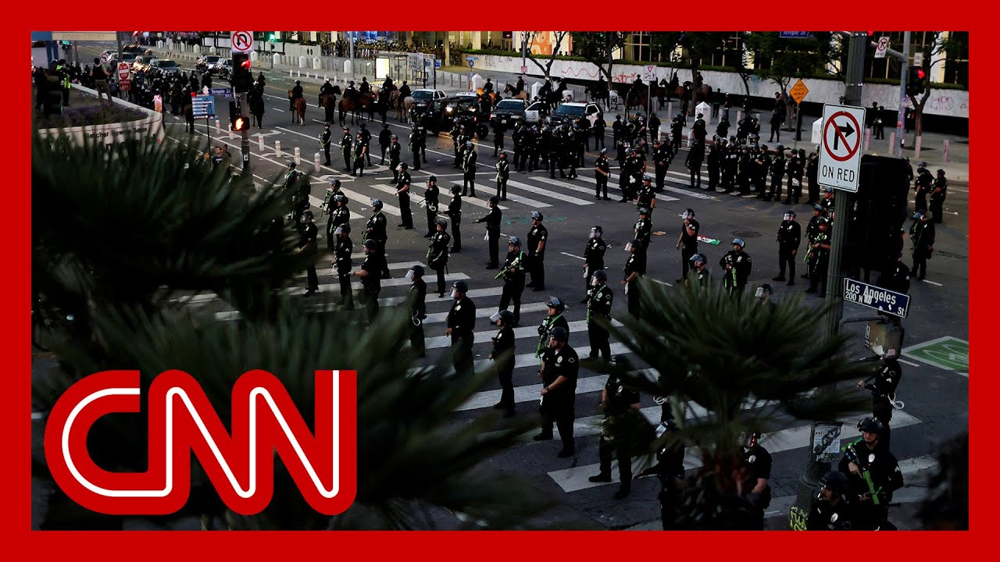

【洛杉矶准备迎接新一轮抗议之夜：200多人被捕，2名警察受伤，企业遭洗劫】
Summary: Officials in LA are preparing for more demonstrations after over 200 arrests and looting occurred, while political tensions escalate between local and federal authorities over immigration raids and military deployment.
摘要： 洛杉矶官员正为更多示威活动做准备，此前已有200多人被捕并发生抢劫事件，同时地方与联邦当局因移民突袭和军事部署问题导致政治紧张升级。

⏱️ Estimated Reading Time: 17 min
📚 六级生词 📚 雅思生词 📚 托福生词 📚 专八生词 📚 SAT生词 📚 考研生词 📚 GRE生词 📚 高考生词 📚 视频里的生词
Officials in LA are preparing for yet another day of demonstrations.
洛杉矶官员正在为又一天的示威活动做准备。
The curfew instituted last night could take effect again in just More than 200 people were arrested last night, mostly for failing to disperse.
昨晚实施的宵禁可能很快再次生效。昨晚有200多人被捕，大多因未能驱散。
The LAPD says two officers were and several businesses were loot And in just an hour, the LA district attorney expecte to announce new protest related A short time ago, LA's Mayor Karen Bass held a press conference to call for an end to immigration rates, saying that's what's responsible for what she described as the problems occurring now.
洛杉矶警方称两名警察受伤，多家企业遭洗劫。再过一小时，洛杉矶地区检察官预计将宣布与抗议相关的新消息。不久前，洛杉矶市长凯伦·巴斯召开新闻发布会，呼吁停止移民突袭，称这是当前问题的根源。
This was provoked by the white H The reason why we don't know. I posit that maybe we are part of a national experiment to determine how far the federal government can go in reaching in and taking over power from a governor, power from a local jurisdiction, and frankly, leaving our city and our citizens, our residents So these protests began in L.A., but we're now seeing them spread to more than a dozen cities.
这是由白人...我们不知道原因。我认为我们可能是一项国家实验的一部分，以测试联邦政府能从州长和地方管辖权夺取多少权力，并让我们的城市和居民...这些抗议始于洛杉矶，但现在已蔓延至十几个城市。
And as that plays out, President Trump is defending his decision to federalize the California National Guard.
与此同时，特朗普总统为其联邦化加州国民警卫队的决定辩护。
I'm able to do things now that I wouldn't have been able to do because the previous president and presidency was so bad that anybody looks good and can be stronger on an attack on Los Angeles.
我现在能做到以前做不到的事，因为前任总统及其政府太糟糕了，任何人看起来都更好，并能更强势地应对洛杉矶的袭击。
Yes. Okay. I think bringing in the National four years ago or eight years ag would have been more difficult.
是的。好吧。我认为四年前或八年前调动国民警卫队会更困难。
So President Trump made that decision to deploy not just thousands of Guard National troops, National Guard troops, but also hundreds of Marines without the consent of California's governor Gavin N
因此，特朗普总统决定不仅部署数千名国民警卫队士兵，还包括数百名海军陆战队员，且未经加州州长加文·纽瑟姆同意。
A military spokesperson confirms those Marines are still undergoing training, and they've not yet hit the streets of LA.
一名军方发言人证实，这些海军陆战队员仍在接受训练，尚未进入洛杉矶街头。
Still, Newsom last night cast this decision in sweeping, dramatic terms.
然而，纽瑟姆昨晚以全面而戏剧性的措辞评价这一决定。
This is about all of us. This is about you. California may be first, but it clearly will not end here Other states are next. Democracy is next to Ocracy is under assault. Before our eyes, this moment we have feared, has
这关乎我们所有人。这关乎你。加州可能是第一个，但显然不会止于此。其他州将是下一个。民主正受到攻击。我们恐惧的时刻已在眼前。
So that framing and taking on the president directly seems pretty welcome in the Democratic Party, a party that has been, frankly, struggling to find a charismatic leader and effective message since at least Trump's election in November.
因此，这种直接对抗总统的框架似乎在民主党中颇受欢迎，该党自至少特朗普11月当选以来一直难以找到有魅力的领导人和有效信息。
Multiple sources tell CNN other Democratic governors have been calling Newsom to talk how what's happened in Californi might unfold in their own states
多名消息人士告诉CNN，其他民主党州长一直在联系纽瑟姆，讨论加州事件可能如何在他们自己的州展开。
And this showdown, of course, creating an opportunity not just for Newsom to build his 2028 credentials. You can quite literally see him doing that on your screen, but also for president Trump and his allies to try to define years before our next presidential election is set to kick off.
这场对峙不仅为纽瑟姆建立2028年竞选资格创造了机会（你几乎可以在屏幕上看到他在这样做），也为特朗普总统及其盟友提供了在下次总统选举前数年定义局势的机会。
Those images of foreign flags being waved with by illegal crim and by violent rioters, in the face of cars blowing up in a flames in t I have photos of that here to sh with this violence and destructi that occurred is an image that governor Gavin Newsom owns. This is his city.
那些非法罪犯和暴力暴徒挥舞外国旗帜的画面，面对汽车在火焰中爆炸...我有照片展示这种暴力和破坏，这是州长加文·纽瑟姆的形象。这是他的城市。
All right, my panel's here. And we're also joined by CNN's Nick Watt on the ground in L.A.. Kristen Holmes is outside the white House, and CNN chief law enforcement and intelligence analyst John Miller standing by for us in New York. Nick, I do want to start with yo
好的，我的专家小组在这里。我们还连线了CNN在洛杉矶现场的尼克·瓦特。克里斯汀·霍姆斯在白宫外，CNN首席执法与情报分析师约翰·米勒在纽约待命。尼克，我想先问你...
Our viewers can see it's, you know, you're in the place where it's all unfolding. What have you seen today? What do officials there expect t
观众可以看到你就在事件发生地。你今天看到了什么？那里的官员预计...
Well, Casey, we are outside the detention center. The federal detention center that has been the focus of the demonstrations. And right now, it is pretty chil
凯西，我们在拘留中心外。这个联邦拘留中心是示威的焦点。现在情况相当平静。
I would say a dozen, maybe two dozen protesters, very And National Guardsmen who you can see here, very different posture from yest
我想说有十几名，也许二十几名抗议者，非常...你能看到的国民警卫队士兵，姿态与昨天大不相同。
There are far fewer of them. And also they do not have their riot shie Very chill for now, but it is just lunchtime here in
他们人数少得多，也没有防暴装备。目前非常平静，但现在只是洛杉矶的午餐时间。
Now, what happens tonight? Well, listen, that in part depends on this political stando that's way above the heads of everybody her
今晚会发生什么？这在一定程度上取决于这场政治对峙，远超出这里所有人的掌控。
Mayor bass has said, listen, if the Ice raids continue, if we continue to have federal troops in our st then maybe we'll need to continue with the curfew, because her argument is that all of these protests are a reaction to what the federal government i
巴斯市长表示，如果ICE突袭继续，如果我们继续有联邦军队在我们的街道上，那么我们可能需要继续实施宵禁，因为她认为所有这些抗议都是对联邦政府行为的反应。
She is blaming them. The feds, they say, listen, the raids are going to continue. So that's the standoff. And we've heard that they are in need just a little south of L.A. we heard of raids this morning at a Home Depot at a gym. Apparently an older man was deta outside a house of worship.
她指责他们。联邦政府则表示突袭将继续。这就是对峙。我们听说在洛杉矶以南不远处，今早有突袭发生在Home Depot和健身房。显然一名老人在礼拜场所外被拘留。
So, listen, bass says the protest will probably continue. And the feds say the raids are going to continue now. last night, a couple of hundred people were arrested during that for failure to disperse. It was all pretty calm process, I have to say.
因此，巴斯说抗议可能会继续。联邦政府则表示突袭将继续。昨晚有几百人因未能驱散被捕。我必须说整个过程相当平静。
A couple of other people have been charged with felony is throwing Molotov cocktails, both here downtown and in Paramo over the past few days. More charges, as you say, are expected to come. And there was a very interesting from the mayor of Huntington Par who spoke this morning.
还有几人被控重罪，因过去几天在市中心和帕拉莫投掷燃烧瓶。如你所说，预计会有更多指控。亨廷顿帕克市长今早的发言非常有趣。
He is a marine veteran, served i and he had a message for the Mar who have been deployed here to L He said, remember when you swore you didn't swear an oath to a dictator, to a tyrant or to a president? You swore an oath to the people. That was his message to those tr
他是海军陆战队退伍军人，曾服役...他对部署到洛杉矶的海军陆战队员说：记住你们宣誓效忠的不是独裁者、暴君或总统，而是人民。这就是他对这些部队的讯息。
We have not seen the Marines out so far. And as I say, the National Guard presence toda Casey, is a lot, lot lower than it was yesterday. But listen, it's early. Let's see how it shakes out. If that curfew kicks in again, that'll be 8 p.m. tonight through 6 a.m. again. But right now, very different situation here than there was this time yesterd
我们尚未看到海军陆战队员出动。如我所说，凯西，今天的国民警卫队人数比昨天少得多。但听着，现在还早。让我们看看情况如何发展。如果再次实施宵禁，将是今晚8点到明早6点。但现在这里的情况与昨天此时大不相同。
Let's see what happens. Casey. Yeah. Nick. I was going to say when we were speaking to you yes and then also to our colleague E Burnett, things were a lot more than they look in your live shot right now, I'm sure you'll bring us anythin that may unfold in your location as we go through the hour. But, Kristen, I want to ask you about the whit
让我们看看会发生什么。凯西。是的。尼克。我正想说，昨天我们和你以及同事E·伯内特交谈时，情况比你现在直播画面显示的严重得多。我相信你会随时带来你所在地的任何新动态。但克里斯汀，我想问你关于白宫...
They were asked about Homeland Security Secretary Christie Noem's reques to have the military do some of the arrests of these protesters, which is, o not how this typically works. How did they respond?
他们被问及国土安全部长克里斯蒂·诺姆要求军方逮捕一些抗议者的事，这通常不是这样运作的。他们如何回应？
Yeah, and not just to see how it typically work. There's no real legal authority for that to happen, particularly at this juncture. And the white House, while they do push the envelope, they are aware of where the legal boundaries lie. That's likely why or at least in why you heard Carolyn Leavitt when she was asked about this letter. Really deflect on that question. Take a listen.
是的，这不仅关乎通常如何运作。目前阶段这没有真正的法律依据。白宫虽然会挑战界限，但他们清楚法律边界在哪里。这可能是为什么卡罗琳·莱维特被问及这封信时回避了问题。听听看。
I can't speak for the president and what's currently happening on the ground now. And as you know, the president federalized the National Guard u code ten, which he has the authority to do and our United States Marines and the National Guardsm and women who are on the ground are helping to create a peaceful environment for Ice and Border Patrol.
我不能代表总统发言，也不清楚当前地面情况。如你所知，总统根据第10条联邦化了国民警卫队，这是他有权做的。我们美国海军陆战队员和国民警卫队男女官兵正在帮助为ICE和边境巡逻队创造和平环境。
Now, just because she did not answer the question about Kristi Noem, asking for the military to help with these arrests does not mean that the administration as a who is not really putting their foot and doubling down on this idea that the National Guard should be in place.
她没有回答关于克里斯蒂·诺姆要求军方协助逮捕的问题，并不意味着整个政府没有坚持并加倍强调国民警卫队应该到位。
You heard Pete Hegseth saying that they might look into preemptively putting the National Guard in ot where there are protests. You also heard Pam Bondi, the attorney general, earlier today, saying they're not scared to use escalation in Los Angeles
你听到皮特·赫格塞思说他们可能考虑在其他抗议地点先发制人部署国民警卫队。今天早些时候你还听到司法部长帕姆·邦迪说他们不害怕在洛杉矶升级行动。
So as a whole, they have doubled down on this i that they deserve to be there, that it's the right thing to do to be there. And obviously, we've heard Carolyn Leavitt saying the same thing. We've heard over and over again needed them to come in and be this presence in order for them to get to the place they are now.
总体而言，他们加倍强调他们应该在那里，这是正确的做法。显然，我们听到卡罗琳·莱维特也这么说。我们反复听到需要他们介入并存在，才能达到现在的位置。
So, John Miller, you obviously have so much law enforcement experience here. Can you help us understand how a police force reacts to the that the active duty U.S. military would come in and conduct arrests, which is, of course, their responsibility?
约翰·米勒，你显然有丰富的执法经验。你能帮我们理解警察部队对现役美军介入并执行逮捕（这本是他们的责任）会作何反应吗？
So, Casey, we are literally in uncharted te here. And I say uncharted, meaning, ye there have been times, many in the course of history, where a governor has activated the state's, you know, National Guard detachment and sa we have a riot, we have a flood, we have whatever it is, where we need that help.
凯西，我们确实处于未知领域。我说未知，是因为历史上有很多时候州长会激活州的国民警卫队分队，说我们有骚乱、洪水或任何需要帮助的情况。
And the governor, under title 32 has the ability to confer a lot of state authorities, to them and how they can act. Whereas under title ten, the president is federally using them as military. This is where we get into the co area today.
根据第32条，州长有能力授予他们许多州权力及行动方式。而根据第10条，总统是联邦化使用他们作为军队。这就是我们今天进入的复杂领域。
Major General Scott Sherman, who is the head of the Task Forc that's being deployed in Los Ang said, unlike what the mayor said the o which is they're just here to protect federal property. And federal buildings, said they will be accompanying a on their investigations, on their search warrants, on their arrests, and that they are not performing a law enforcement function, that they are they're providing protection for the agencies and their personnel at work and also in the field.
在洛杉矶部署的特遣部队负责人斯科特·谢尔曼少将表示，与市长说的他们只是来保护联邦财产和建筑不同，他们将陪同机构进行调查、执行搜查令和逮捕，但他们不履行执法职能，而是为工作机构和人员提供保护。
Here's the the rub with that, Casey, which if you're providing protection f and they end up getting in some and some confrontation with a gr if someone is armed and they're they're providing pr and they what, they detain someb Are they not making an arrest?
问题就在这里，凯西。如果你提供保护，最终与群体发生冲突，如果有人武装而你提供保护并拘留某人，这不是逮捕吗？
if they have to use force or dea or have to shoot somebody, are they not taking police actio Is that the military in the stre taking police action? That's where we're on very brittle ground here.
如果他们必须使用武力或致命武力，或必须射击某人，这不是采取警察行动吗？这是军队在街头执行警察行动吗？这就是我们处于非常脆弱立场的地方。
And I'll tell you exactly what h They do not do any arrests. They are now follow me here. They are strictly here to detain to wait for law enforcement to come and handle those demonst
我告诉你实际情况：他们不执行任何逮捕。听清楚：他们严格来说只是拘留，等待执法人员来处理示威者。
So once under our law, once you're not free to go, once you're being detained, you are technically under arrest So they're waiting for law enfor to come and charge them. The point is, a lot of lines are being crossed and it's irking law enforcement. It's asking the elected official and the policy is not quite clea
根据我们的法律，一旦你被拘留不能自由离开，技术上就是被捕。所以他们等待执法人员来指控。关键是许多界限被跨越，这激怒了执法部门。这要求民选官员...政策并不十分明确。
Yeah. well, you are crystal clear. John Miller. thank you very much, for that.
是的。你说得非常清楚。约翰·米勒。非常感谢你的分析。